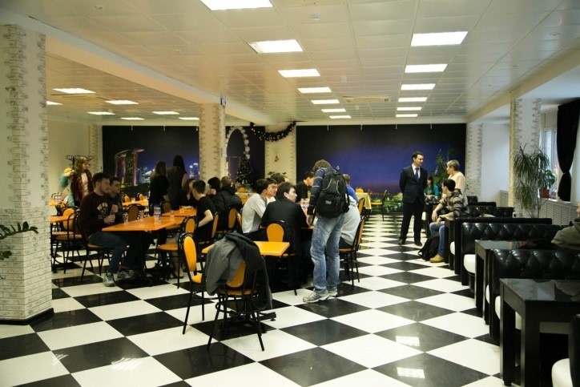
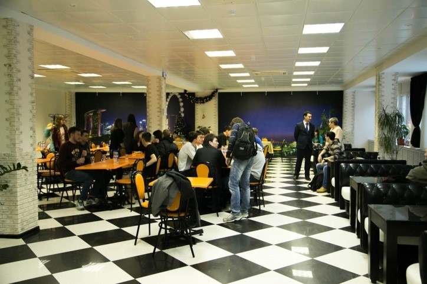

Общежития
В комплекс зданий Студенческого городка Федерального государственного образовательного бюджетного учреждения высшего образования «МИРЭА - Российский технологический университет» входят ниже перечисленные студенческие общежития, предназначенные для проживания иногородних студентов, аспирантов, докторантов, стажеров.
Общежитие № 1, расположенное по адресу: г. Москва, проспект Вернадского, дом 86, стр.1 (ближайшая станция метро: Юго-Западная).
Жилая площадь общежития — 8 359,6 м2. Общее количество мест в общежитии — 1 161. Общежитие представляет собой 14-этажное панельное здание.
Общежитие № 2, расположенное по адресу: г. Москва, Мичуринский проспект, д. 12, корпус 2 (ближайшие станции метро: Университет, Проспект Вернадского).
Жилая площадь общежития — 2 374,3 м2. Общее количество мест в общежитии — 320. Общежитие представляет собой 5-этажное здание квартирного типа.
Общежитие № 3, расположенное по адресу: г. Москва, ул. Студенческая, дом 33, корп. 3. (ближайшая станция метро: Студенческая).
Жилая площадь общежития — 2 642,0 м2. Общее количество мест в общежитии — 292. Общежитие представляет собой 6-этажное здание.
Общежитие № 4, расположенное по адресу: г. Москва, ул. Студенческая, дом 33, корп. 4. (ближайшая станция метро: Студенческая).
Жилая площадь общежития — 2 524,3 м2. Общее количество мест в общежитии — 284. Общежитие представляет собой 6-этажное здание.
Общежитие № 5, расположенное по адресу: г. Москва, ул. 11-я Парковая, д.36 (ближайшая станция метро: Первомайская).
Жилая площадь общежития — 6 433,1 м2. Общее количество мест в общежитии — 800. Общежитие представляет собой здание блочного типа.
 

Общежитие № 6, расположенное по адресу: г. Москва, ул. Нарвская, д. 12 (ближайшая станция метро: Водный стадион).
Жилая площадь общежития — 2 220,5 м2. Общее количество мест в общежитии — 371. Общежитие представляет собой 9-этажное здание.